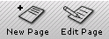
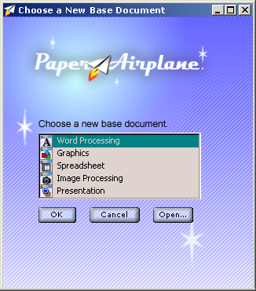
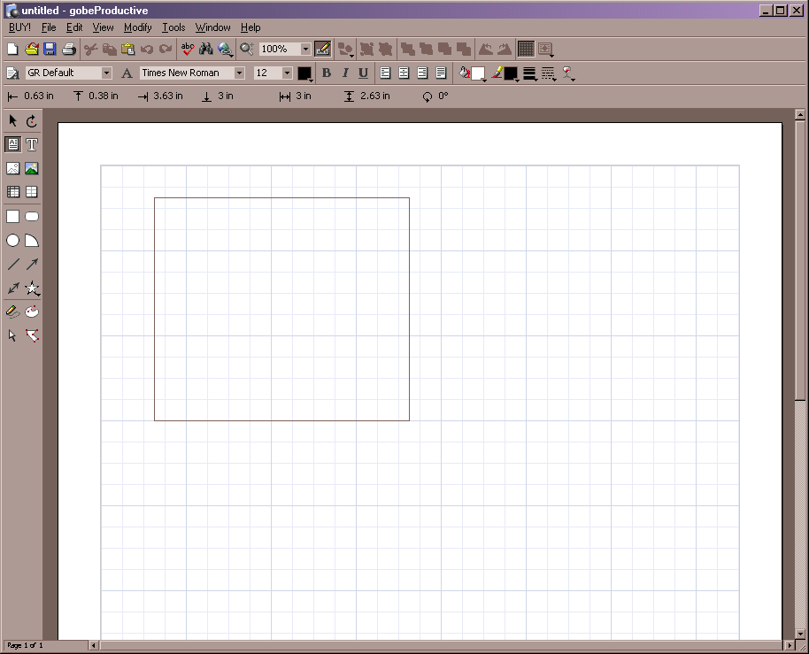
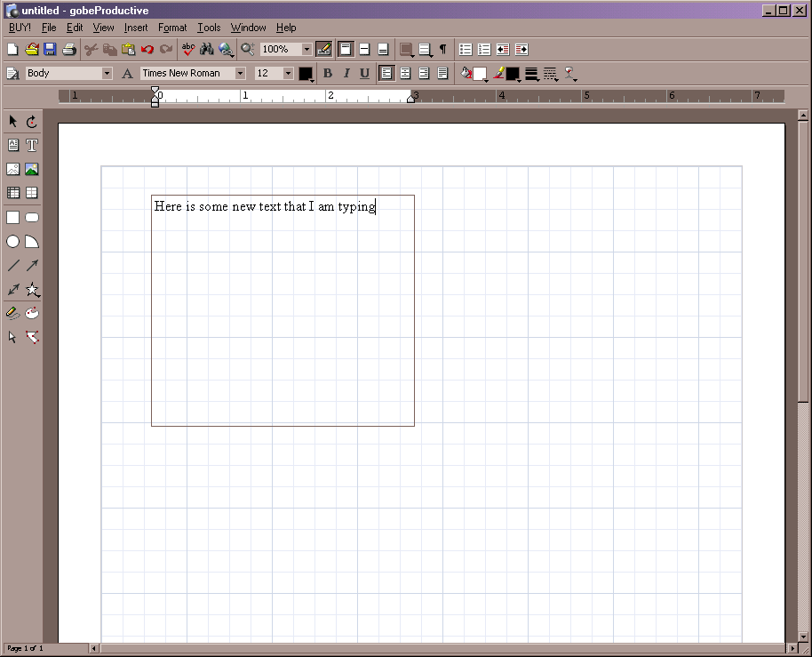
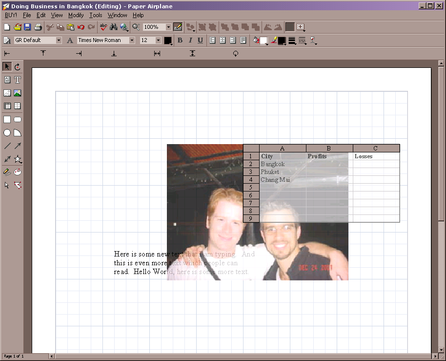

| | |
Table of Contents | Last | Next
Walkthrough - Seamless Collaboration
A Full Office-Suite at Your Fingers
Paper Airplane finally frees us from the tyranny of HTML by integrating a powerful next-generation office suite. Gone are endless nights spent trying to get web pages to look the same across many different browsers; with the Paper Airplane editor, What You Create Is What Your Users See (WYCIWYUS). Paper Airplane achieves this by replacing the aging, crusty HTML file-format with a new format that better encodes how your documents look on the screen.
Paper Airplane includes an extremely powerful office suite that redefines creating documents. Instead of dealing with several different programs, such as Microsoft Word, Microsoft Excel, etc., Paper Airplane's editor has a unified document that allows you to drop text, spreadsheets, drawings, presentations, etc. into your page. You never have to switch programs to add different items to your document.
To create a new page, first press the New Page icon or press the Edit Page icon at an existing page:

New Page and Edit Page Buttons
After pressing the New Page button, choose a base document for your new page:

Choose a New Base Document
This will determine the basic tools that are available when you first starting creating your document. Once you have chosen the base document, you can easily mix and match anything you desire onto your page.
Easily position text anywhere in your page by drawing a Text Box:
The Text Box Icon

Drawing Text Box

Typing Text into a Text Box
Easily insert images by clicking on the Image icon or dragging and dropping an image from your file browser. Once you have your image, you can arbitrarily position it anywhere on your page; try that with HTML!
Easily gain advanced control of how text wraps around your images and easily make any object, such as spreadsheets, partially transparent:

Some More Items on the Page
You can even rotate a spreadsheet and still manipulate it's values:

Some More Items on the Page 2
This is just the tip of the iceberg for Paper Airplane's editor. Create powerful presentations, add sheets of commentary to any page, use image manipulation and graphics tools to markup your documents, and more. The best part is that your pages can grow collaboratively since every Two Way Web Site member also has access to the Paper Airplane editor.